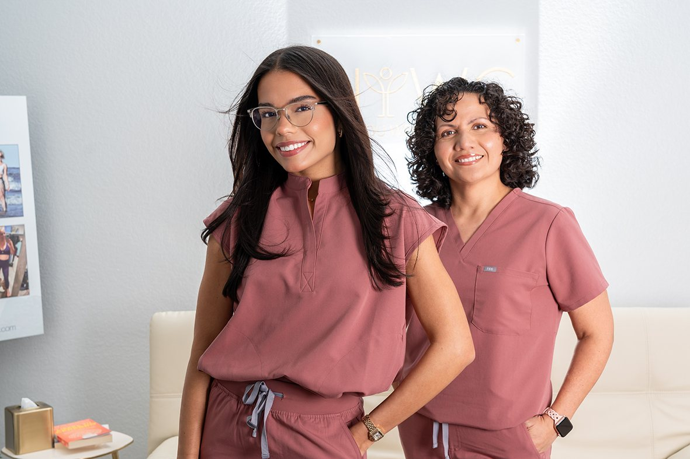
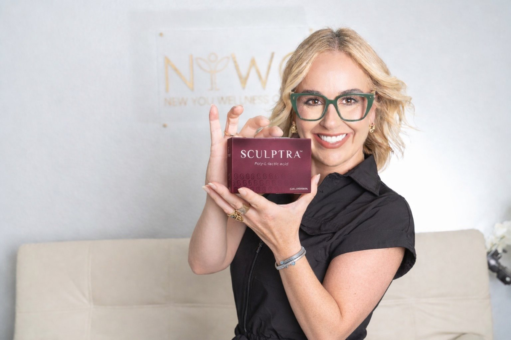
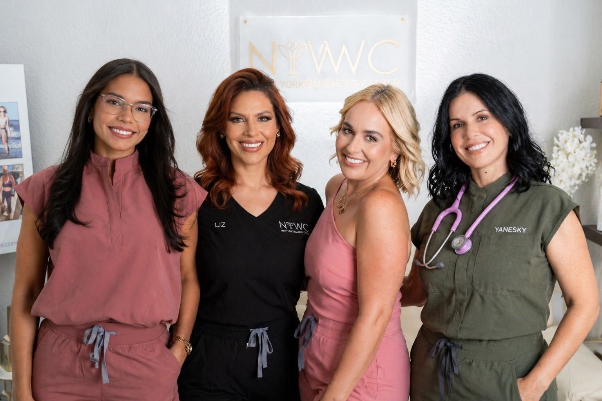
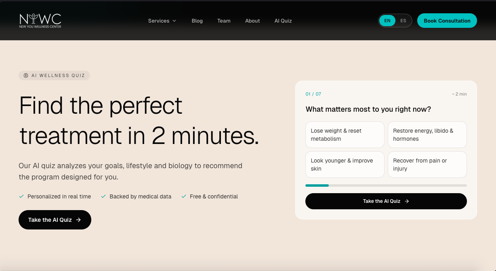
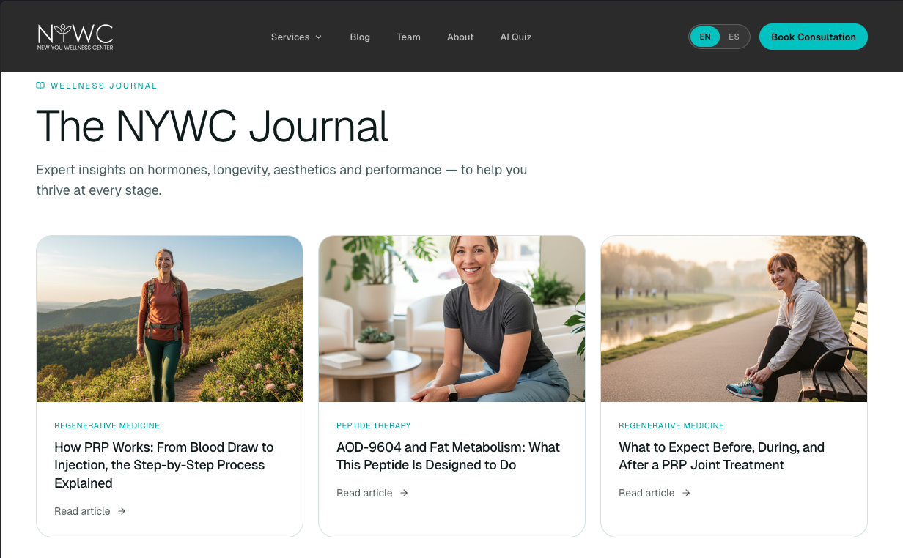
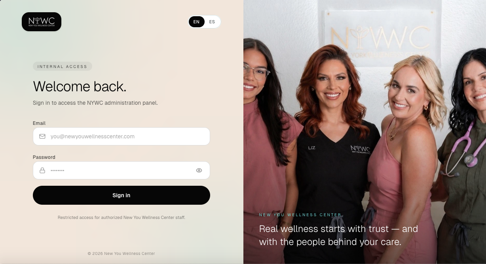
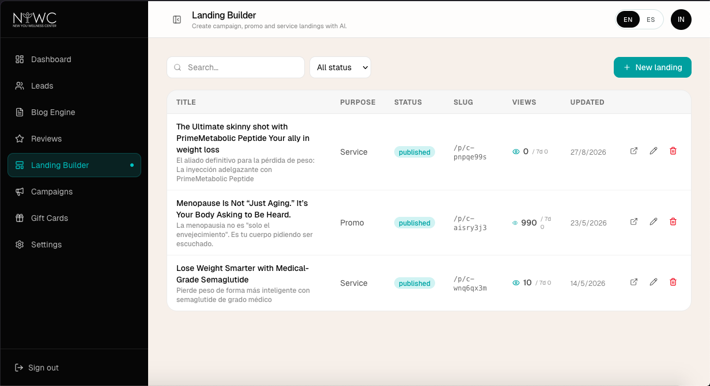

De un sitio de contacto a un motor de marketing con IA integrada.
- Marketing Digital
- Desarrollo Web
- AI Marketing Solutions
- Cliente
- New You Wellness Center
- Industria
- Bienestar / Salud
- Disciplinas
- Marketing Digital, Desarrollo Web, AI Marketing Solutions
- Alcance
- Tomball y Katy, Houston, TX
New You Wellness Center es una clínica de bienestar con sucursales en Tomball y Katy, en el área de Houston. Nos contrataron para el manejo de sus redes sociales, la configuración y seguimiento de sus campañas en Google Ads, y la creación de un sitio web completamente nuevo. Lo que entregamos fue más que un sitio: una plataforma con un quiz de perfilamiento impulsado por IA, un sistema de generación automática de blogs conectado a la API de Gemini, un panel de administración de leads y un constructor de landing pages propio. Hoy, New You Wellness Center no solo genera leads de mejor calidad, sino que cuenta con un motor de marketing capaz de automatizar sus esfuerzos de comunicación en distintos puntos de contacto.

New You Wellness Center opera dos sucursales en el área de Houston, Texas: Tomball y Katy. Nos buscaron para reforzar su posicionamiento digital, alineando la imagen de bienestar que la clínica busca transmitir con una presencia en redes sociales, campañas de pauta y un sitio web a la altura de esa propuesta de valor.
El reto era doble: por un lado, alinear la imagen de marca de la clínica en redes sociales para reforzar su posicionamiento en ambas sucursales; por otro, construir una presencia digital que fuera más allá de un sitio informativo, capaz de impulsar divisiones específicas de tratamientos y sostener un flujo constante de leads calificados sin depender exclusivamente de la pauta paga.
Cuatro decisiones clave
-
01
Alinear la imagen de bienestar de la marca en redes sociales para reforzar el posicionamiento digital de ambas sucursales, Tomball y Katy.
-
02
Implementar y lanzar campañas de Google Ads asociadas a landing pages de tratamientos específicos, para impulsar divisiones particulares de la clínica.
-
03
Desarrollar una plataforma con un quiz de inteligencia artificial que perfila a cada usuario hacia el tratamiento con mejor fit para su caso particular.
-
04
Integrar una base de datos conectada a la API de Gemini para automatizar la generación y publicación diaria de contenido de blog, reforzando el posicionamiento orgánico del sitio.

Posicionamiento y campañas
Comenzamos alineando la imagen de bienestar que la clínica busca transmitir en sus redes sociales, reforzando el posicionamiento digital de sus sucursales en Tomball y Katy. Con esa base construida, implementamos y lanzamos campañas de Google Ads asociadas a landing pages de tratamientos específicos, lo que permitió impulsar divisiones particulares de la clínica de forma independiente.

Quiz de perfilamiento con IA
Construimos una plataforma que funciona no solo como punto de contacto, sino como un sistema integral de operaciones. Incluye un quiz con inteligencia artificial que perfila a cada usuario hacia el tratamiento que mejor se ajusta a su caso particular.

Blogs automatizados con IA
Una base de datos conectada a la API de Gemini alimenta un backlog de temas asociados a los tratamientos de la clínica: un cron ejecuta la publicación diaria de blogs sin intervención humana, reforzando de forma constante el posicionamiento orgánico del sitio.


Panel administrativo y constructor de landings
Integramos también un módulo administrador desde donde el staff de la clínica da seguimiento a los leads generados tanto por el quiz de IA como por las campañas de Google, junto con un constructor de landing pages propio que permite crear nuevas landings en cuestión de minutos.
Con estas herramientas, New You Wellness Center no solo ha mejorado la calidad de los leads generados por sus campañas, sino que hoy cuenta con un motor de marketing que le permite automatizar sus esfuerzos de comunicación en distintos puntos de contacto, sin depender de intervención manual constante.
Un motor de marketing
Automatiza la comunicación en distintos puntos de contacto, sin intervención manual constante